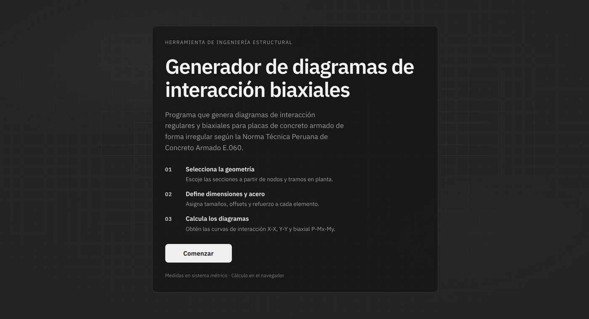
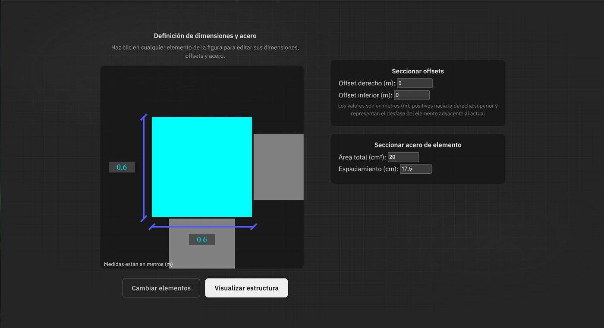
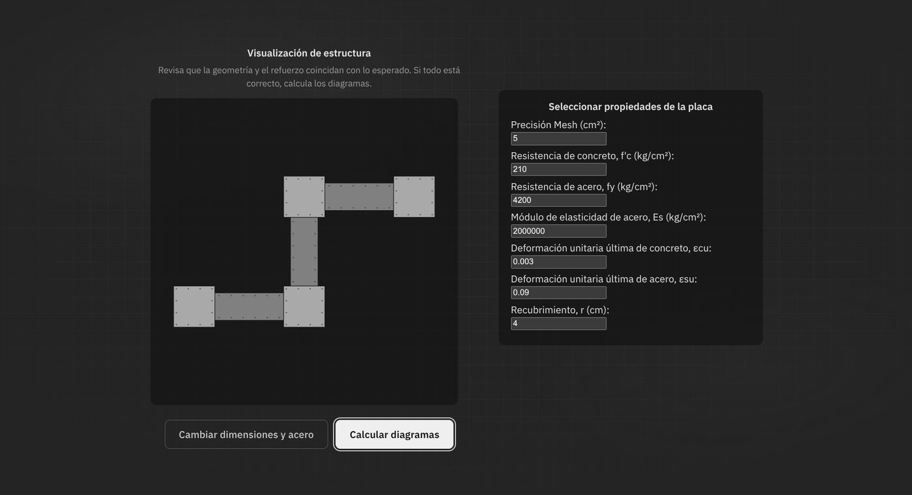
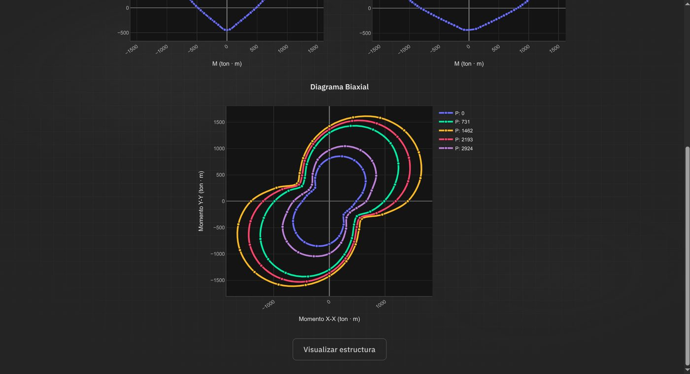

Interaction Diagram Generator
An engineering tool for structural designers — editable wall geometry, smart rebar distribution, and biaxial interaction diagrams. Built for civil engineers, this tool calculates stress diagrams for shear walls of irregular shapes under the Peruvian E.060 concrete construction norm.
Live demo soon